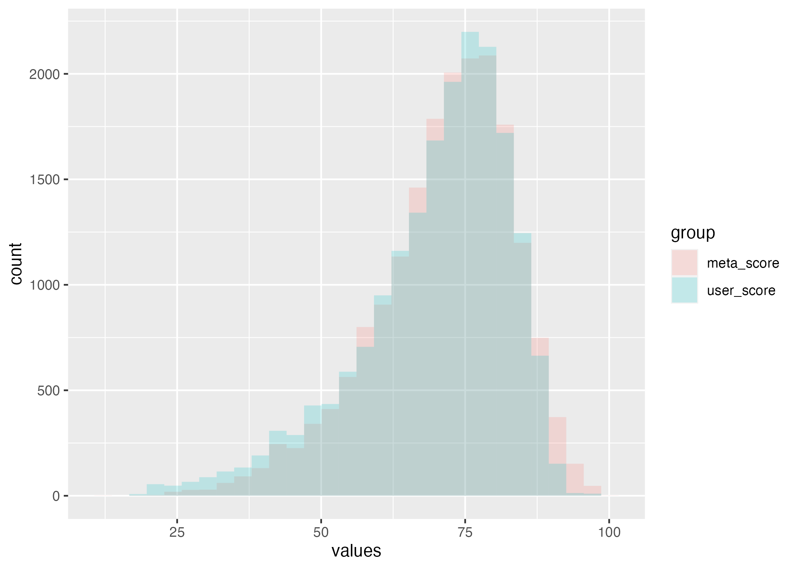
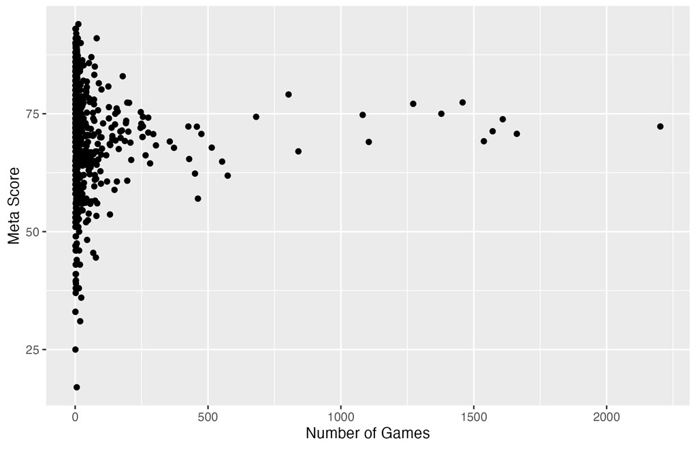
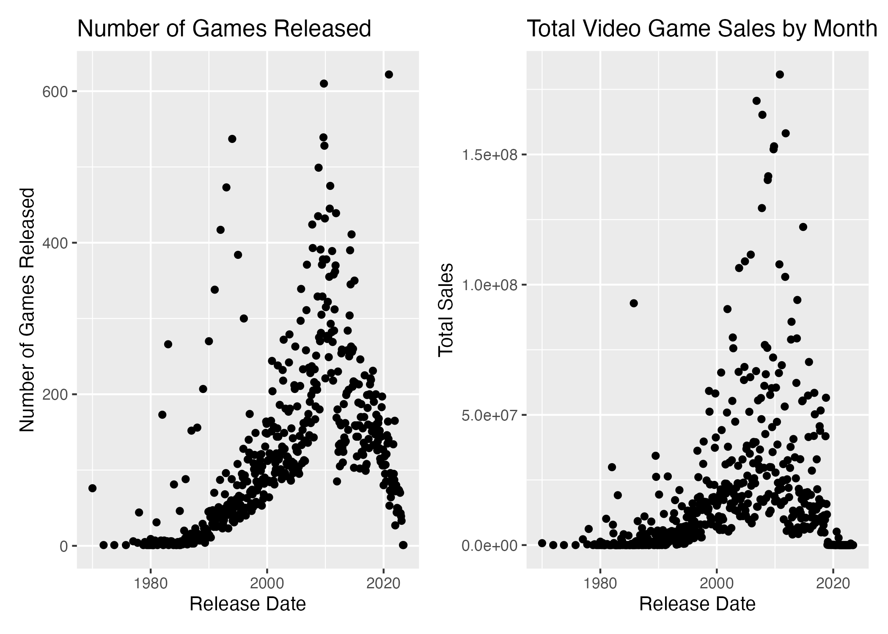
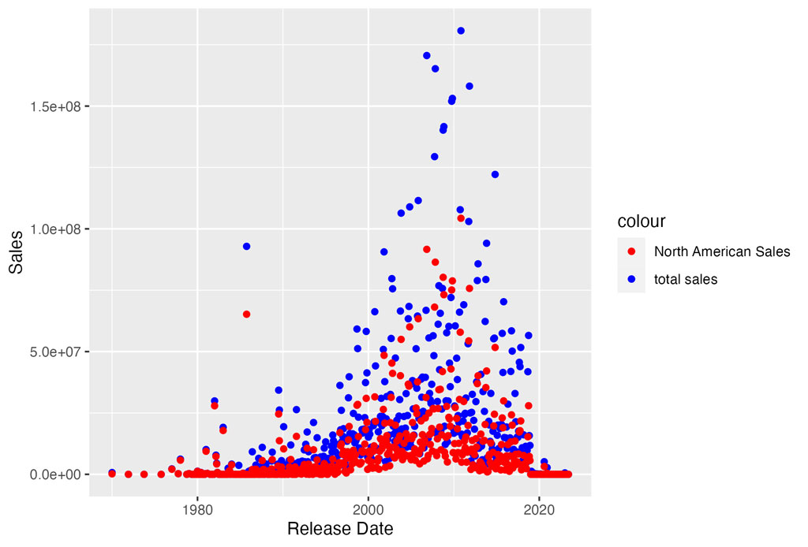
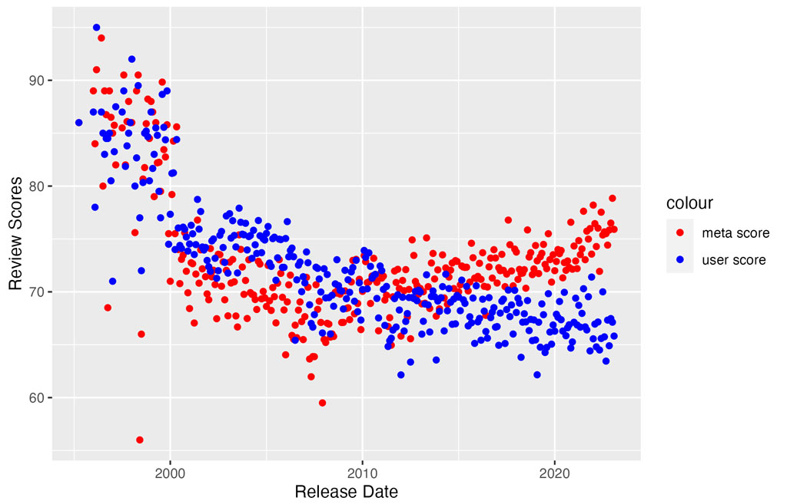

1. Introduction
Video game sales are an indicator of success, but reviews and ratings can affect performance outcome. This project looks at correlation of Metacritic scores and total sales.1
By analyzing datasets of game sales to their Metacritic ratings, insights can help to optimize future releases2025
2. Data
This section provides an overview of the data used to explore video game sales and Metacritic scores
The dataset includes game titles, release year, platform, genre, publishers, Metacritic scores, and sales figures
Review scores are from Metacritic, which collects ratings from critics to give overall rating to each game1


.jpg)




3. Analysis
In this section, the relationship between video games sales and Metacritic scores is analyzed. Statistical methods are utilized to identify trends across platforms, genres, and release years.
The analysis considers factors such as critic reviews, feedback, and sales data to determine whether higher score rates are correlated with increased sales.
In calculating correlation coefficients, observed patterns indicate how strong review scores can influence sales performance.1
The study reveals insights into Metacritic scores impacting video game sales. Higher scores are associated with larger sales, but other factors such as platform and marketing can play a role as well.
The results show that developers and publishers should consider critical reception and marketing strategies when planning new releases. Future research could expand datasets or incorporate more metrics for futher analysis.